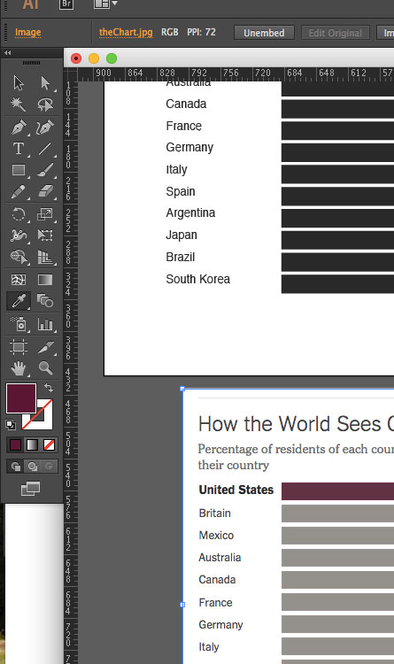

Let's Make a Chart: Intro to Illustrator
Let's go over some tools. There are the 4 that will get you most of the way.
The Selection Tool. This is the tool on the top LEFT of the toolbar (not the white arrow to the right which is similar, but does different things.) This is your general go-to tool that lets you select any element on the page.
The Rectangle Tool. This lets you draw any sized rectangle you'd like. Just click and drag to create a new shape.
The Type Tool. This let's you create text boxes to write in. Remember to click and drag to create a text box, this will allow you greater freedom than if you just clicked on the page and began typing (we'll see why later).

The Line Tool. This allows you to draw straight lines. Hold down shift as you click and drag to keep the line perfectly vertical or horizontal, and adjust the thickness of the line in the top toolbar (called the "stroke").
Here is a good intro guide to Illustrator that will cover some of the basics (it's for a slightly earlier version of Illustrator but they're pretty much the same). Use it as a reference if you get lost.
Ok, so now that we've got the basic 4 down, we're going to make something with them! We're going to recreate this lovely bar chart:

Download the image here and open it up in Illustrator.

We're not going to edit the actual image, we just want it there for reference. Use the arrow tool to move it off the white square in the middle, which in Illustrator lingo is called the "artboard."
We can make this white square as big or as little as we want. Press SHIFT + O to adjust the size.
After I've moved my bar chart image off to the side and I have a roughly equal sized artboard, I'm going to set up my artboard with a grid. Go to Illustrator > Preferences > Units, and make sure "General" and "Stroke" are pixels.
Then go to "Guides and Grid" and add a Gridline every 50px, and 5 subdivisions.
We can't see anything yet, because our grid is hiding! Let's show it. View > Show Grid.
Finally, to make our grid a bit more useful, we'll have our objects "snap" to the grid.
Now, let's use the rectangle tool to draw a rectangle the same height and width as a bar. I've hidden the grid in these examples, but yours should still be visible.
But it's a white rectangle! Let's make it black. Click on the color picker tool at the bottom of the toolbar.
Then you can select any color you'd like. For now, let's stick with black.
Great! Now I've got a black bar. Let's add a label. Click on the type tool.
Then click and *still holding down* drag a box for your text.
If you start typing, it should appear right inside that box.
You can adjust the font, size, etc, in the character menu at the top.
Let's make it Helvetica Bold.
Click on the selection tool and drag the text to the right of the bar. Adjust the size of your artboard if necessary.
Now select BOTH the text box and the black bar by holidng down Shift and clicking each one individually. (You can also select multiple objects by drawing a box with the selection tool.)
Let's make a copy of these two items. Select both items, hold down Option and drag them down the page.
Now make a bunch more copies and add labels that match the bar chart image.
Rename your labels to match our bar chart, then select everything but "United States" and un-bold them.
Add a headline and intro. Also make the font-size smaller to match the bar chart.
A handy guide to tools in Illustrator.
Now let's work on those bars. To get everything lined up, bring your bar chart image underneath your mockup. Press Command + R to show rulers.
Click on the ruler on the left-side of your screen and drag to the right. A grey vertical line or "guide" should appear. Line it up with the left hand side of the bar chart. When you release it will turn blue.
Make sure the left side of your bar chart and the original bar chart match.
You can drag around that guide as much as you want. We'll use it to scale all our bars correctly. Click on each black rectangle and adjust the right side to make it shorter or longer.
Resize all your bars, using the guide to help you.
Now let's change the color of the first bar to the same purple shade. Select the Eyedropper tool, and click on the purple bar. It should turn the color pallete the same shade!
To save that precise shade for later, we're going to open up the Swatches menu (Window > Swatches), and click the icon that looks like a post-it note, and hit OK.
Now we can apply that color to our United States bar. Click on the bar, then the newly-created swatch of purple. It should turn the bar purple.
Now using what you've learned about color matching and the text tool, see if you can add labels and match the color grey of the rest of the bars.
Next we have to add the background very light grey bar. Make a new rectangle (use the guide to get it the right length) and drag it on top of the first bar.
With the long rectangle still selected, go to Object > Arrage > Send to Back.
We've now successfully rearranged the order of our bars.
Keep going with the rest of them. Remember you can select an item, hold down Option, and drag to make a copy. Holding down Shift at the same time also keeps things vertically aligned. Then add a Source line.
Notice the 2 horizontal lines on the top and bottom of the chart? We'll add those with the Line tool.
Click and drag to make a line, hold down Shift to keep the line straight. Then, in the top menu, give it a stroke of .25pt
Then set the stroke color (notice, it's the hollow square in the color pallete) to a light grey.
Duplicate that line at the bottom. Fiddle with the fonts and alignment to get it as close to the original as possible, and then you're done! Please email me your finished Illustrator file.